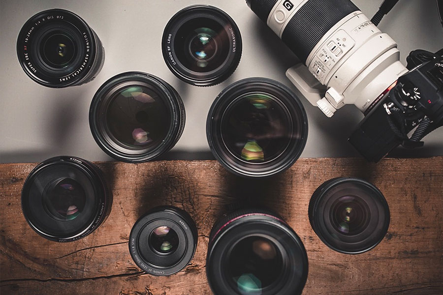
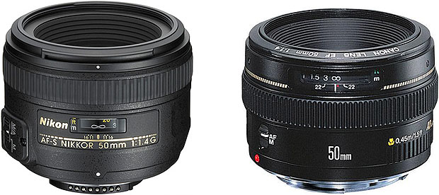
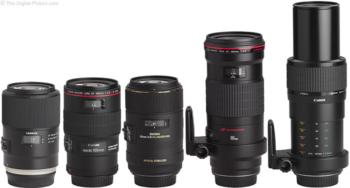
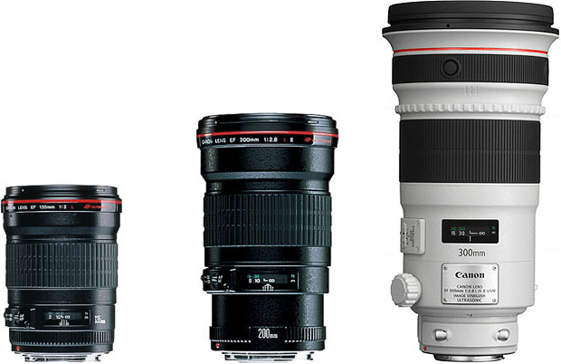
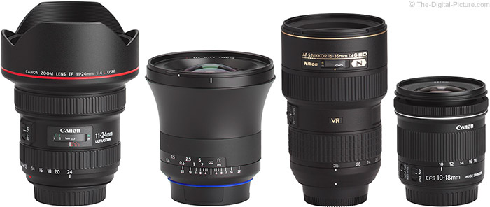

Basic Gears in Photography
Camera Gears
Camera is your best buddy when it comes to photography. It is a device for recording an image of an object on a light-sensitive surface; it is essentially a light-tight box with an aperture to admit light focused onto a sensitized film or plate.

Camera Lens
A camera lens is an optical lens or assembly of lenses used in conjunction with a camera body and mechanism to make images of objects either on photographic film or on other media capable o f storing an image chemically or electronically.
Type of lenses

Standard Lens
A standard lens is one with a mid-range focal length, typically around 50mm. They have an angle of view which is roughly the same as the angle that the human eye can comfortably view, meaning that they produce images which appear "natural" to the viewer.Standard camera lenses usually have a fixed focal length and wide aperture, giving them excellent performance in low light. They are popular for a wide range of photography subjects, including landscapes, portraits, and candid shots.

Marco Lens
A macro lens is one designed especially for close-up photography. They have a different internal construction from normal lenses which gives them very good sharpness and contrast, meaning that they produce some really eye-catching photos.Macro lenses are useful for photographing any subject at very close range. Typical subjects include insects, animals, and plants, but they are also popular for taking extremely detailed photos of everyday objects.

Telephoto Lens
A telephoto lens has a long focal length and provides a high level of magnification, allowing you to photograph subjects at a moderate to far distance. They tend to be bigger and heavier than other types of lens, although modern technological advances have made them more compact and easier to handle. Telephoto lenses are popular for any type of photography where you can't get near to the subject, including wildlife and sports events. They are also commonly used in portrait photography, where a moderate telephoto lens will provide a natural, undistorted perspective.

Wide Angle Lens
A wide angle lens is one with a short focal length. They provide an angle of view beyond that of a standard lens, allowing them to capture more of the scene in a single shot. Extreme wide angle lenses are known as fisheye lens; these can capture around 180 degrees, making for some intriguing, almost abstract photos.Wide angle lenses are useful for photographing landscapes, cramped interiors, and other subjects which won't fit into a normal lens's field of view. Fisheye lenses take this even further, and are popular for photographing action sports like skateboarding and surfing, where their inherent distortion gives photos a dynamic feel.